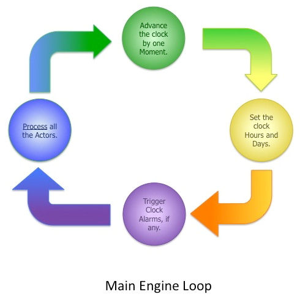
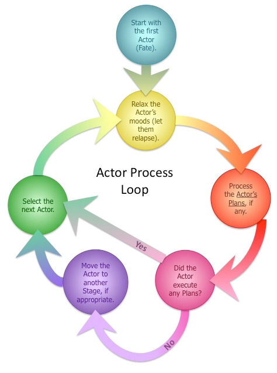
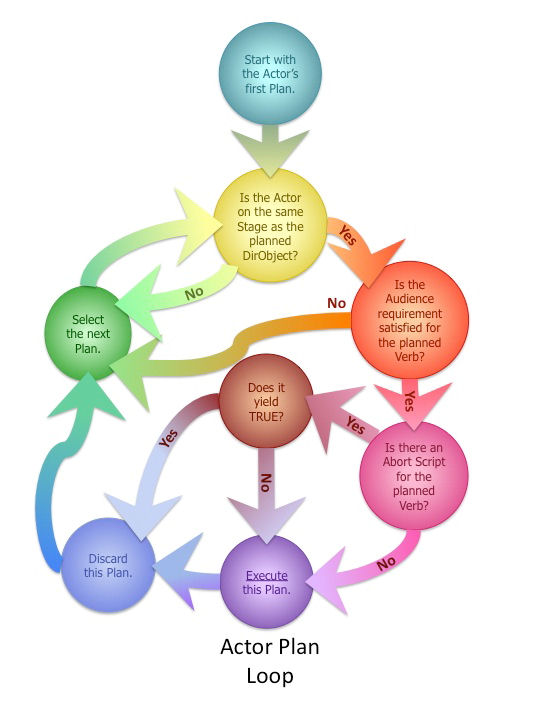
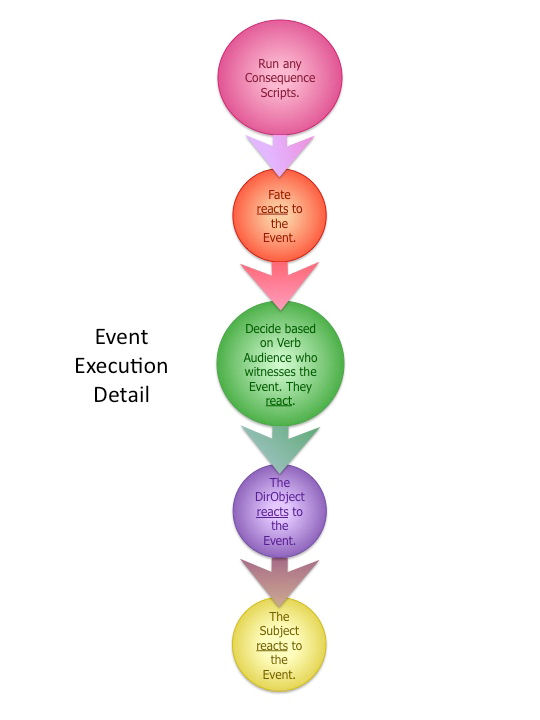
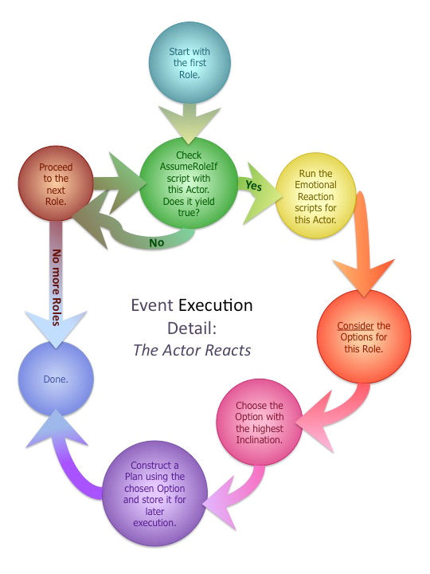
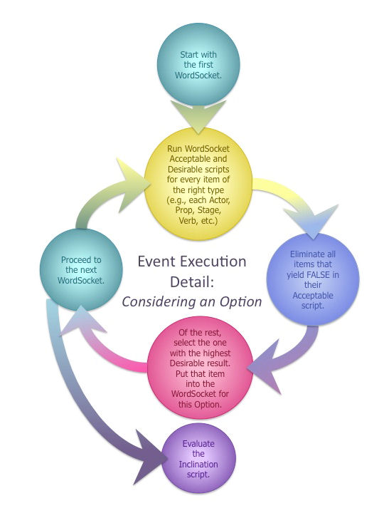

To get the most from these tutorials, follow the instructions on downloading SWAT and joining the Authors' Guild before you begin.
This series of flow charts depicts, in deepening levels of detail, the processing decisions made by the Story Engine in running the storyworld. First is the main engine loop:
The Story Engine processes all Actors' actions and travel:

For each Actor, the Story Engine makes a cascading set
of decisions and processes his or her Plan(s):

To execute a Plan entails the following series of steps:

The Actor's Reaction involves a set of decisions and calculations, as follows:

The Story Engine performs the following steps for each
Option under consideration by a ReactingActor:

And that's all there is to it! All right, that's a fib...believe it or not, this is a simplified version of what happens. But it gives you the big picture of what the Engine does, in what order, to make things happen in your storyworld.
The next tutorial contains this process in written form with some more detail, including Actor travel.
Downloadable versions of these flowcharts can be found in Snips, Tips, and Tricks.